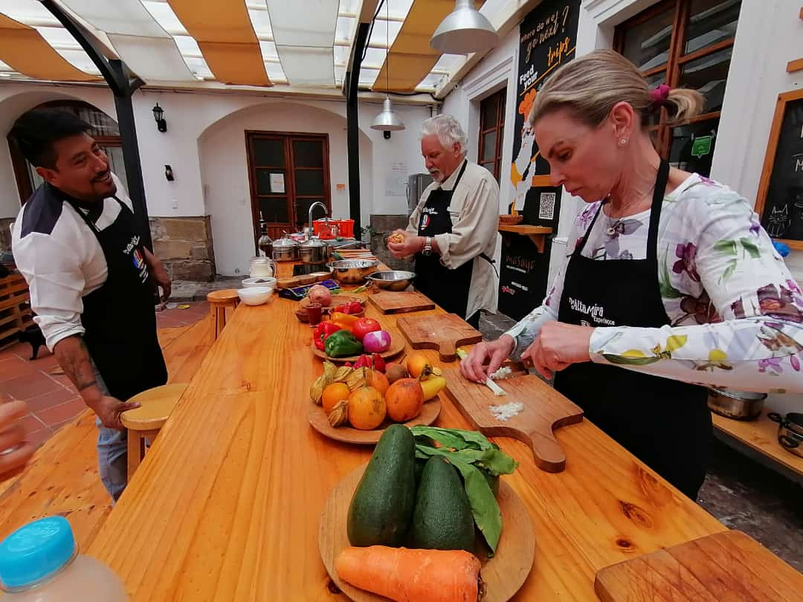
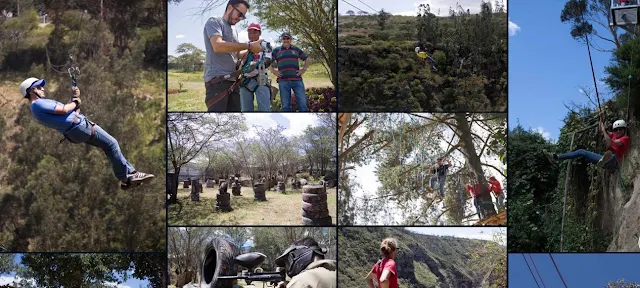
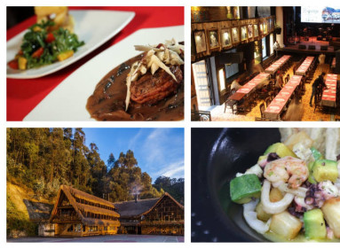

Tour Cultural
Recorrido por las principales iglesias, plazas y museos del Centro Histórico.
Precio: $25 por persona
Recorrido por las principales iglesias, plazas y museos del Centro Histórico.
Precio: $25 por persona

Degustación de platos típicos como fritada, empanadas de viento y colada morada.
Precio: $20 por persona

Visita a miradores y caminatas por calles coloniales con actividades recreativas.
Precio: $30 por persona

Incluye hospedaje, recorridos guiados y experiencias gastronómicas.
Precio: $80 por persona